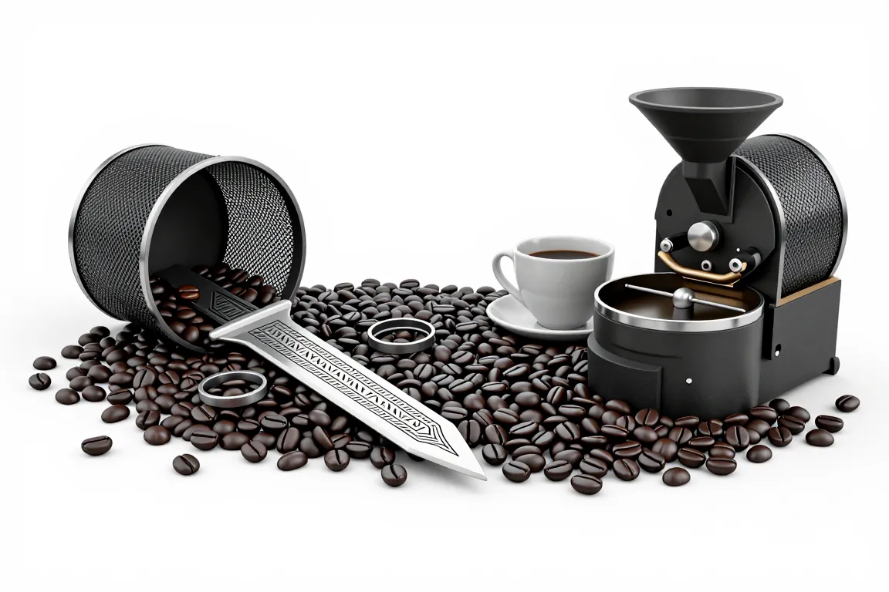

Svart, hvitt og sølv, 3D-rendrede blader og nettformer, treningstøy og skilt fra treningssenteret, med et kaldt, rent utseende. Det vokste ut av en nettgruppe fra 2013 som blandet goth, sport og nettkunst.

Kjerneidé
Behandle kroppen og grensesnittet som én ren, mørk maskin: gothstemning, treningsfunksjon og ingen pynt uten bruk.
Designprinsipper
Sett bunnen til #0A0A0C og bruk hvitt (#F4F4F5) som hovedblekk.
Render én 3D-form (et blad, et nett eller en kromring) på 40 % til 60 % av utsnittet, uten mennesker.
Bruk tynn sans-serif i versaler med +0,2em i 1 vekt (300) til display.
Legg til én syresølv-aksent (#C9D1D9) på høyst 8 % av flaten.
Sett strenge moduler på 8px og juster tekst på et rutenett med 12 kolonner og rennesteiner på 24px.
Legg til sportsetiketter: en størrelseskode, et lite kryss eller et repetisjonstall på 11px til 12px.
Hold radiusen på 0px på paneler og 2px på knapper.